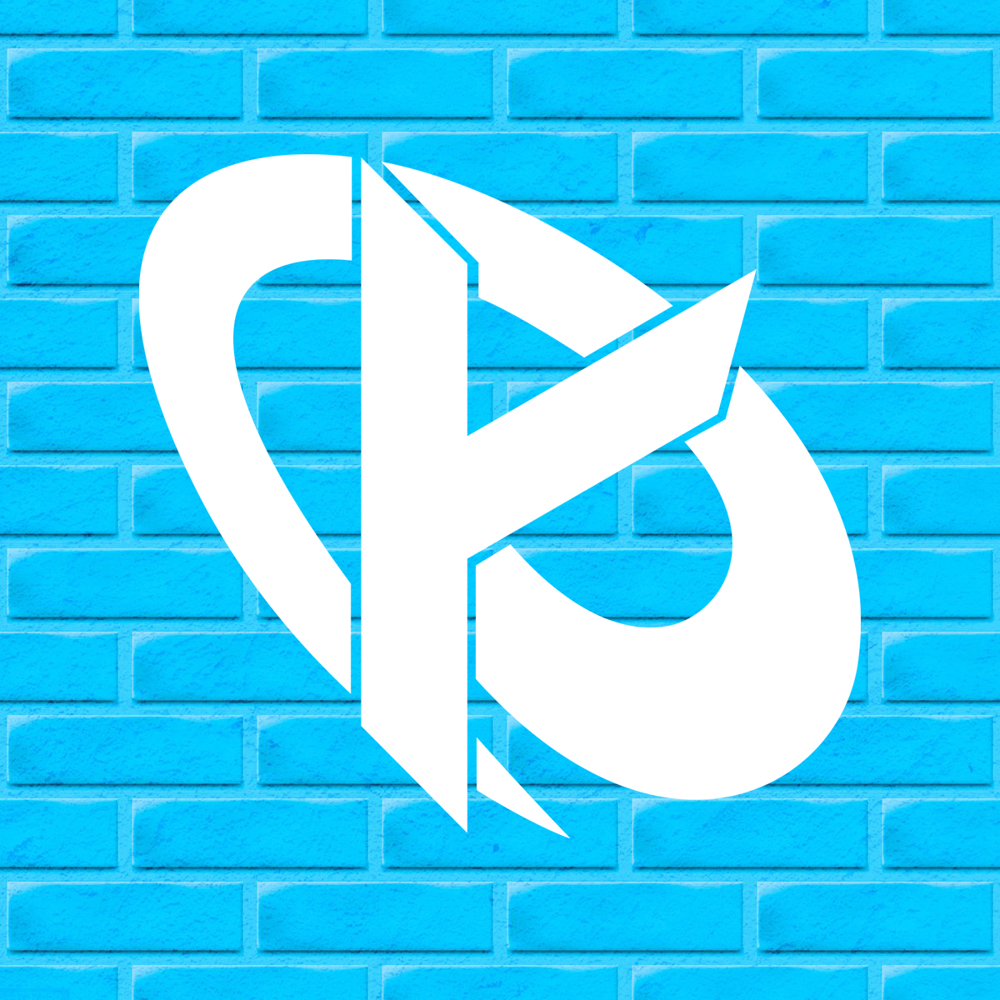
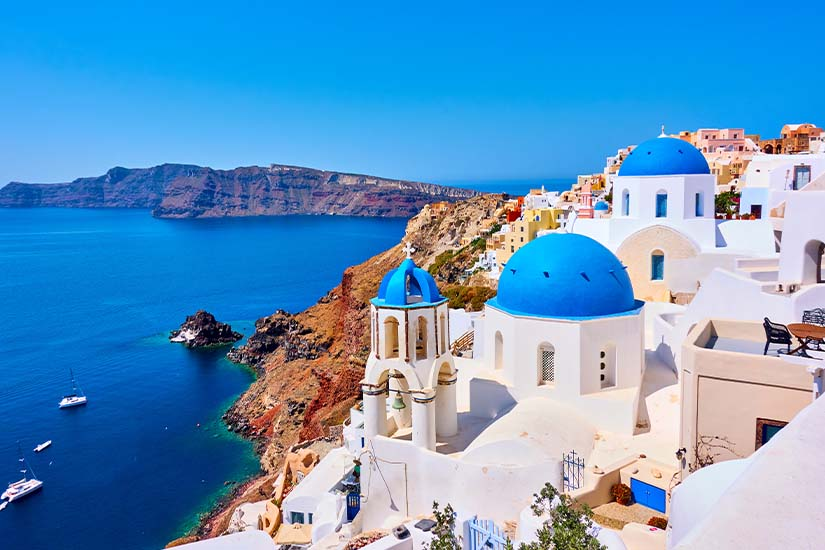
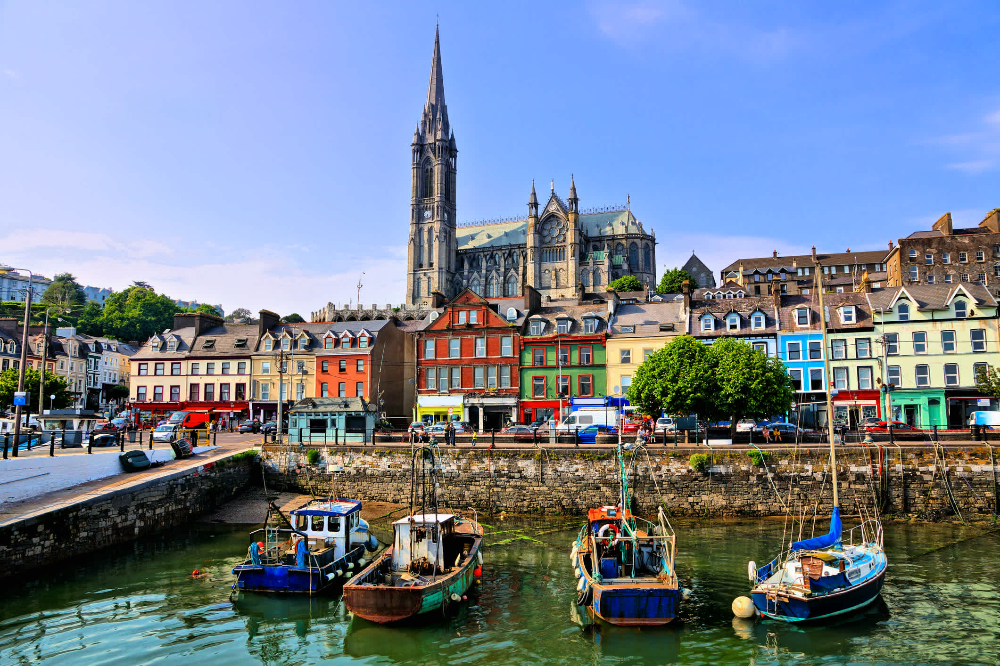
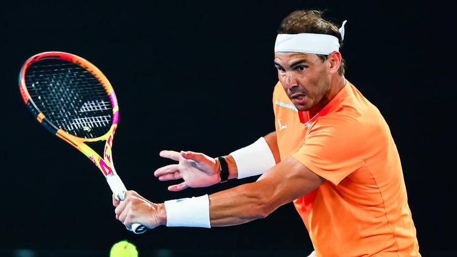

Bienvenue sur mon Profil

Hello, je m'apelle Ludovic Saint-Yves. Je suis un pur produit parisien, fiere de ma ville malgré toutes les critiques autour. J'étudie actuellement au global BBA de l'ESSEC Business School et je suis en premiere année
Hello, je m'apelle Ludovic Saint-Yves. Je suis un pur produit parisien, fiere de ma ville malgré toutes les critiques autour. J'étudie actuellement au global BBA de l'ESSEC Business School et je suis en premiere année
Je suis d'abord un passioné par les jeux vidéos. Je joue principalement à League Of Legend, Overwatch et The Crew 2. Je m'intéresse aussi énormément à tous l'univers et notamment l'e-sport. Je suis par exemple un grand fan de l'équipe G2 Esports ainsi que la Karmine Corp
Je suis aussi passioné par les cryptomonnaies et la technologie blockchain. Je m'intéresse énormément à la créations des coins et leur monnaie et je trouve fassinant comment la technologie se developpe aujourd'hui

J'adore voyager et j'ai eu la chance de découvrir énormément de pays. J'ai d'abord beaucoup voyager en Grece
J'ai aussi beaucoup visité les pays du nord de l'Europe tel que la Grande Bretagne mais aussi l'Irlande. Je suis d'ailleurs tombé amoureux de l'Irlande et notamment de Dublin ou j'aimerai faire mon échange
J'ai suis souvent partis aussi au Maroc et j'aimerais y repartir dans le cadre de mon échange intercampus
J'ai fait du tennis pendant une dizaine d'année mais je ne me suis jamais classé puisque je n'ai fait aucun tournoi. Je continue aujourd'hui de suivre le tour où je soutiens principalement Rafael Nadal. Je vais aujourd'hui à la salle pour continuer de m'entrainer
